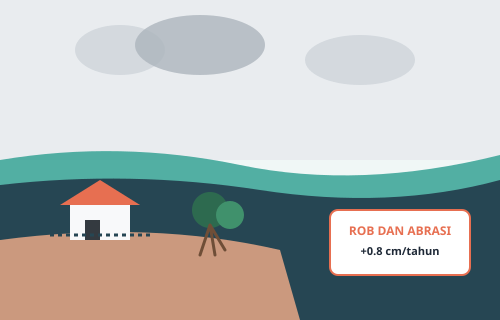

Studi Kasus Wilayah Pesisir Indonesia
Ancaman Tenggelamnya Pesisir Pantura: Krisis Erosi dan Kenaikan Air Laut
Kawasan pesisir Pantai Utara (Pantura) Jawa, yang meliputi Pekalongan, Demak, Semarang, hingga pesisir Jakarta, menghadapi kombinasi kenaikan air laut global dan penurunan muka tanah (land subsidence).
Menurut data riset BRIN dan BMKG, laju kenaikan air laut di perairan Indonesia mencapai 0.5 hingga 1 cm per tahun. Di Demak, ratusan hektar tambak dan pemukiman warga kini terendam rob permanen. Restorasi benteng alami berupa sabuk hutan bakau dan penataan air tanah menjadi langkah adaptasi yang mutlak diperlukan.
Rujukan: Kajian Kerentanan Pesisir BRIN dan BMKG (Kategori: Adaptasi Pesisir)